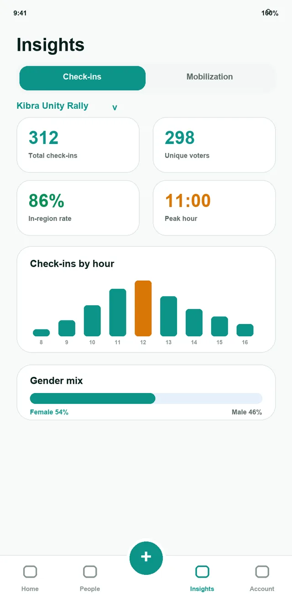
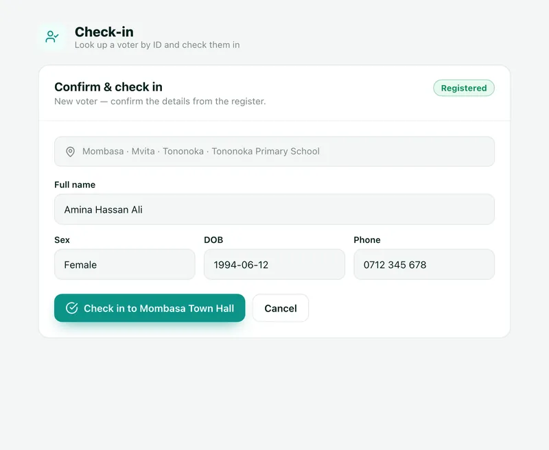

Registration • Mobilization • Election Day • Analysis
MachineNova is a suite of integrated digital tools built for every stage of the electoral cycle — from grassroots mobilization to real-time national results. One ecosystem. Total visibility.

Four integrated platforms. One shared data layer. What a mobilizer captures in the field appears on the national command dashboard in real time — no manual aggregation, no silos.
ID scanning, voter lookup, KYC verification, and live attendance analytics for political events and rallies.
Explore platform 02Door-to-door voter capture with mobilizer attribution, performance metrics, and ID-verified vote projection.
Explore platform 03Full election-day command chain — national admin to polling-station agents — with live result aggregation and visual dashboards.
Explore platform 04Registration analysis, demographic profiling, and strategic regional intelligence to inform campaign planning.
Explore platformReal screens from the MachineNova workspace. Every view is scoped to the user's role and geography, so a ward manager sees their four stations and the county owner sees all of them.

The overview opens on the four numbers that matter on the day: reporting progress, stations open, turnout so far and how many stations need attention.

Filter stations by status (Open, Reporting, Issue, Closed, Uncovered) and open any one to act on it without leaving the list.

Switch between Governor, Senator, Woman Rep, MP and MCA. See who leads, by what share, and how much of each constituency has reported, then drill down to ward and station.

Pick the event, type or scan the ID, and the platform resolves the voter from the register: name, sex, date of birth and registered polling centre.

Coverage compares check-ins with the voters available in each constituency, ward and polling centre, and rates every area from Strong to Critical.
MachineNova is not a collection of apps. It is an election operating system — a single, integrated infrastructure that connects every level of your campaign, from grassroots mobilizers to national leadership, through one shared data layer.
Every voter scan, every agent report, every result submission flows into the same system in real time. No spreadsheets. No manual aggregation. No information gaps.
Learn About Us

National and regional party structures deploying agents, mobilizers, and coordinators across multiple constituencies.
Candidates running independent campaigns who need professional-grade field coordination and results monitoring.
Central campaign offices that need real-time visibility into field operations, mobilization progress, and election-day status.
Civic organizations and observer missions requiring structured field reporting, station monitoring, and data collection.
Field agents and mobilizers run the Android app with ID scanning, 44px+ tap targets and offline support. Mobilization and check-in keep working without signal and sync later. Teal means check-in, amber means mobilize, so the job is obvious at a glance.


The most comprehensive platform in the MachineNova suite. Manages the full chain of command from national administrators down to individual polling-station agents — and captures results live as counting begins.
Political organizations operate under intense scrutiny. MachineNova is built with role-based access control, encrypted data transmission, comprehensive audit trails, and controlled permission structures — so every action is accountable.
View Security ArchitectureOwner, Admin, Chief Agent, Manager and Agent roles. Every user sees only what their role requires.
All data in transit and at rest is encrypted end-to-end.
Every action logged with timestamps for post-election verification.
Managers scoped to specific regions, constituencies, or wards.
Questions about the MachineNova platform suite. Can't find what you need?
Talk to our teamAll four platforms share a common identity, voter, and reporting layer. Data captured by a mobilizer in the field is immediately visible in the national command dashboard without any manual transfer or aggregation.
The platform is built around national ID scanning. Specific document types are configured during onboarding to match the identity infrastructure of your country or region.
The Command Center uses role-based access control: Owner, Executive, Admin, Chief Agent, Manager and Agent. Role and geography decide exactly what each person sees. Managers can be geographically scoped to a specific region, constituency, or ward.
The platform scales from local constituency campaigns up to national elections. You can deploy one platform or the full suite depending on your operational needs.
Yes. On the Checkin field app, mobilization and check-in keep working offline and sync automatically when the connection returns. Our team also helps assess field connectivity during onboarding.
Check-in still goes through. The voter is flagged as out-of-region so leadership can see it in the numbers. For list-only events, only IDs on the approved participant list can be checked in.
No. Results are provisional, agent-reported tallies entered from the signed Form 37A at each station, and they are clearly labelled that way. Totals are checked against recorded turnout, and figures update as more stations report.
Yes. Every organization gets a white-label workspace with its own name, accent color and sign-in screen, bounded to its geography from day one. Members simply sign in, with no subdomains to configure.
Whether you're planning a constituency campaign or a national election, our team will help you deploy the right platforms for your operational needs.